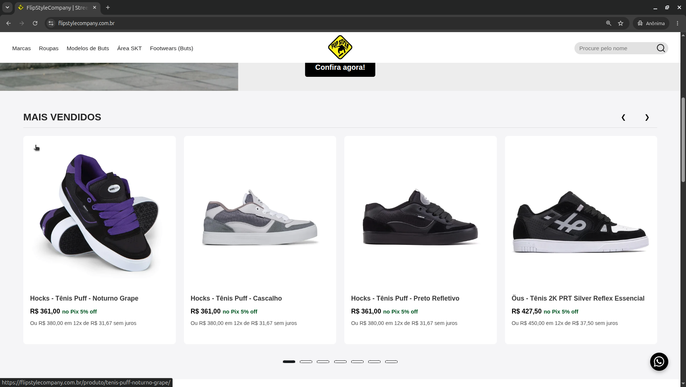

Sistemas com tecnologias mais modernas do mercado
Sites e sistemas em geral sob medida para reduzir custos.
Antes de qualquer código, entendo seu nicho, suas plataformas atuais e suas reais necessidades — seja para pedidos, caixa ou e-commerce.
O objetivo é centralizar operações, cortar custos e automatizar desde um financeiro enxuto até a emissão de notas. Tudo isso integrando chatbots com ou sem IA para filtrar o atendimento e garantir que você gaste tempo apenas com o que importa.
📍 Instalação e suporte presencial em Sengés, Itararé e região. Sistemas online para todo o Brasil.
Por que escolher sob medida
Sistemas alugados vs. solução sob medida com sua infraestrutura
Veja na prática a diferença entre alugar uma ferramenta com funcionalidades que te deixam perdidos e ter uma estrutura construída para a realidade da sua operação.
Sistemas tradicionais
O que o mercado empurra
Soluções engessadas que cobram caro aumentando juros conforme escalão e deixam sua operação dependente de terceiros.
- Mensalidades e taxas por venda que só aumentam
- Dependência total de internet (caiu a rede, parou o gerenciamento que poderia ser feito localmente)
- Suporte lento e robótico quando você mais precisa
- Funções genéricas que não encaixam no seu fluxo
- Seus dados financeiros presos em servidores externos
Sua operação sob medida
O modelo híbrido ou online
Controle total, podendo isolar certas operações localmente e mantendo só o necessário online.
- Sem taxas abusivas por venda ou mensalidades absurdas, você paga apenas pelo que usa, em casos pequenos nem há manutenção
- Decidimos o que fica online ou na sua máquina
- Continua operando normalmente mesmo sem internet utilizando o sistema local
- Atendimento direto com quem desenvolveu o sistema
- Feito sob medida para o seu negócio sem funcionalidades descartáveis
- Dados e backups seguros na sua própria máquina
Dois caminhos
Escolha o modelo que cabe na sua operação
Mesma solução, duas arquiteturas. Você decide o nível de controle, custo e infraestrutura. Vale ressaltar que ambas as opções oferecem os mesmos benefícios em termos de funcionalidades. Dois produtos escaláveis caso seu negócio cresça, deixando só o necessário ficar 24 horas no ar.
Híbrido
Metade local, metade web
O sistema roda no computador da empresa e uma ponte segura o conecta à web se necessário. Focado em operações físicas e negócios robustos — como lojas, restaurantes, mercados, etc. Para quem tem volume alto de dados e não pode parar de funcionar se a internet oscilar. Podendo crescer conforme a necessidade seja para internet ou localmente.
- Dados sensíveis ficam com você
- Funciona com internet instável
- Baixa financeira em tempo real
- Sem mensalidade de nuvem
- Instalação e suporte presencial em Sengés, Itararé e região
- Backups locais ou na nuvem automáticos
100% online
Menos infraestrutura, mais praticidade
Tudo na nuvem, acessível pelo navegador ou celular, sem instalar nem manter nada. Ideal para novos e-commerces que precisam estar 24 horas no ar. Desde pequenos sites de divulgação simples como um portfólio ou lojas físicas que não precisam de controle de estoque podem ser divulgadas gratuitamente sem domínio próprio até lojas maiores que precisam de um e-commerce completo com checkout, carrinho, vitrine e integração com marketplaces.
- Nada para instalar
- Acesso de qualquer dispositivo
- Backups e atualizações centralizados
- Ideal para começar rápido
- Atendimento para todo o Brasil
O que eu faço
Soluções para vender e operar melhor, podendo adicionar qualquer funcionalidade
01 / 02
Para quem quer saber mais
Detalhes técnicos
Tecnologia: escolho a ferramenta certa para cada projeto — Go para serviços que exigem alta concorrência e cálculos pesados, e Django para sistemas web com painel administrativo e banco de dados robusto. Nem todo projeto precisa de uma estrutura complexa logo no início, por isso aplico uma evolução gradual. Trabalho com microsserviços e arquitetura escalável em Docker, garantindo módulos isolados onde eventuais falhas pontuais não afetam o funcionamento do restante do sistema.